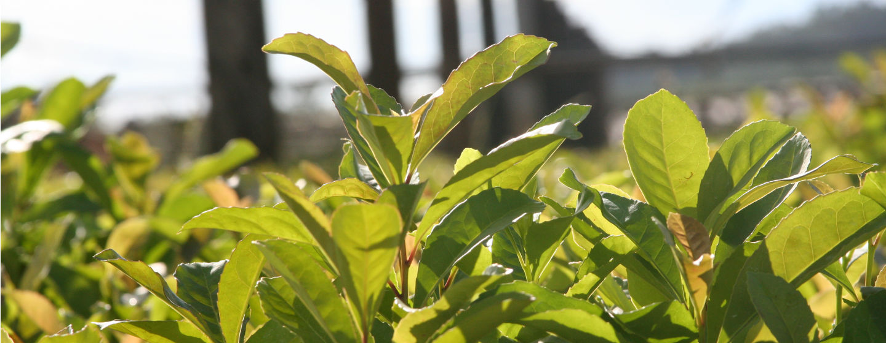
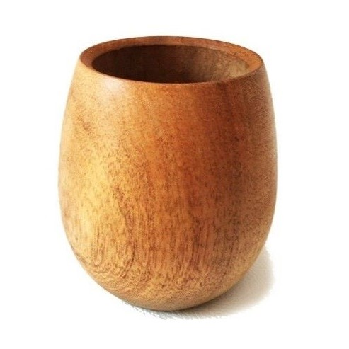

AZUCAR AMARGO MATES


¿Conocés las propiedades que tiene yerba mate para nuestro organismo?
En Argentina, cada habitante consume al rededor de 6,5 kg de yerba mate por año. De esta manera, nuestro organismo recibe una gran fuente de minerales y vitaminas. Además, la yerba mate es un increíble antioxidante y contiene un efecto energizante.


En Azúcar Amargo Mates, tenemos una gran cantidad de mates de algarrobo pintados a mano. Contamos con diseños propios y diseños personalizados a pedido de cada cliente. Podés ver nuestro catálogo en la sección productos, y contactarme para coordinar el envío de tu próximo Azúcar Amargo ♥